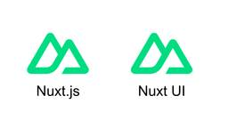
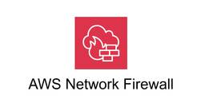

TechHarmony
https://blog.usize-tech.com
TechHarmonyは、SCSK株式会社が運営するエンジニアブログです。SCSKのエンジニア自らがクラウドを中心としたナレッジを積極的にアウトプットすることで社会への還元を行うとともに、更なるスキルアップを目指します。
フィード

ZabbixによるVMware ESXiと仮想マシンの自動登録・監視手順
TechHarmony
こんにちは！SCSKの新沼です。 VMware環境の監視において、こんな悩みを抱えていませんか？ 「膨大な数の仮想マシンを、1つずつZabbixに手動登録するのは大変…」 「すべての仮想マシンにZabbixエージェントを […]
3日前

Nuxt UI を 2.x 系 から 3.x 系 に移行した話
TechHarmony
SCSKの畑です。 今年度の Web アプリケーション開発関連のテーマは大体書きたいもの書けたからもう良いかなと思ってたんですが、本件がそれなりに大変だったことを今更思い出したので備忘として残しておこうと思います。 &n […]
3日前

受賞者リレーインタビュー！第4弾：畑 健治さん
TechHarmony
TechHarmonyエンジニアブログでは、AWS・Oracle Cloud・Azure・Google Cloud 各分野の受賞者にフォーカスし、インタビューを通してこれまでの経歴や他の受賞者に聞いてみたいことをつないで […]
4日前
Microsoft Foundryで作るAIエージェント：応用情報の予想問題生成に挑戦
TechHarmony
Microsoft ESI を通じて Microsoft Foundry の講義を受講しました。 ラボ環境でFoundryを触る中で、「面白い。自分でもAIエージェントを作ってみたい」と思いが湧いてきました。 Micro […]
5日前

Network Firewall ProxyをNetwork Firewall環境に導入する
TechHarmony
こんにちは、SCSKでAWSの内製化支援『テクニカルエスコートサービス』を担当している貝塚です。 以前、「プレビュー中のNetwork Firewall Proxyの導入を検討する」というタイトルで以下の記事を書きました […]
5日前

RDS for MySQL 配下に Aurora レプリカと RDS クロスリージョンレプリカは同時構成できない
TechHarmony
SCSKの畑です。 引き続きデータベース関連のトピックです。今回こそ小ネタです。ちなみに、本エントリの内容で言及している RDS は、先般のエントリで言及していたものと同一です。 小ネタ本題 本エントリのタ […]
10日前
AWS Organizations なしで挑む海外顧客クラウドリフト：マルチアカウント戦略とネットワーク設計の実践
TechHarmony
海外顧客のデータセンター廃止に伴い、オンプレミス環境からAWSへのクラウドリフトプロジェクトにアーキテクトとして参画しました。本記事では、AWS Organizationsが利用できないという制約下で、どのようにマルチア […]
10日前
CatoクラウドのIPv6対応どこまで進んだ？
TechHarmony
CatoクラウドのIPv6対応は多くのお客様の関心も高く、問い合わせも多いテーマです。 この度SCSKではCato Networks社とIPv6に関する共同検証を行いました。 本記事では、一部ですが今回の検証概要をご紹介 […]
12日前
Amazon CloudWatch Synthetics でURL監視を爆速で作る
TechHarmony
どうも。サービス監視といえばURL監視です。 Amazon CloudWatch Synthetics は高機能であるがゆえ、わりと構築に手間がかかりますね。ちょっとURLを突っつけばいいだけなんだけど、ということはよく […]
12日前
AWS Systems Manager Session Managerでの監査ログ取得 – セッションログ設定編
TechHarmony
こんにちは、SCSKでAWSの内製化支援『テクニカルエスコートサービス』を担当している貝塚です。 先日、テクニカルエスコートの顧客から、Windows EC2インスタンスへのRDP接続を画面録画したいというご要望をいただ […]
12日前
Amazon Bedrock Knowledge Bases で構造化データ(CSV)を使用した RAG をつくる -アーキテクチャ編-
TechHarmony
こんにちは、広野です。 RAG をつくるにはチャンキング戦略が大事！と当社若手エンジニアの野口さんに熱く語られまして。 ニーズが多いであろう、CSV データからの検索精度向上を目指してみました。本記事はアーキテクチャ編で […]
13日前
RDS/Aurora (MySQL) のレプリケーション構成についての補足
TechHarmony
SCSKの畑です。 先般のエントリで予告していた通り、なぜ以下のような MySQL レプリケーション構成を取っているのかについて、幾つかの観点から説明していきたいと思います。 補足その1：レプリケーションフ […]
13日前
「Gemini、これ追加して」で終わる機能追加対応。AI駆動開発のリアルな感想
TechHarmony
こんにちは、青木です。 今回はお客様とGoogle CloudでGeminiを利用したアプリ開発を経験したので、その感想を書いていこうと思います。 難しいことは行っていないですが、コーディングの知識がない自分でもAIを用 […]
15日前
ServiceNowの変更管理の違い
TechHarmony
SCSKの伊吹です。 今回はServiceNowの変更管理の違いについて触れてみたいと思います。 ServiceNow上での変更管理の種類 ServiceNowではITILの考えに沿って「通常変更（Normal Chan […]
15日前
「送った資料、読まれてる？」DocSendで実現する、成約率を最大化する「データ駆動型営業」の最前線
TechHarmony
渾身の提案資料をメールで送った後、返信を待ちながら「本当に読まれているのかな？」と不安になったことはありませんか？ 従来のPDF添付による営業では、開封されたか、どのページに興味を持たれたかは神のみぞ知る「ブラックボック […]
16日前
Dropbox APIでデータ移行ツールを作ってみた (後編)
TechHarmony
前回の記事「Dropbox APIでデータ移行ツールを作ってみた (前編) 」では、データ移行で使用するDropbox APIエンドポイントとサンプルコードを紹介しました。弊社が開発したデータ移行ツールでは、upload […]
17日前
【Zabbix × PagerDuty】複数の障害アラートをまとめて「電話は1回だけ」にする実践テクニック
TechHarmony
こんにちは、SCSKの坂木です。 ZabbixとPagerDutyを連携させると、障害発生時に電話で通知を受け取れるようになり非常に便利です。しかし、設定を間違えると「深夜にアラートが連発して、電話が鳴り止まない」という […]
18日前
受賞者リレーインタビュー！第3弾：寺内 康之さん
TechHarmony
TechHarmonyエンジニアブログでは、AWS・Oracle Cloud・Azure・Google Cloud 各分野の受賞者にフォーカスし、インタビューを通してこれまでの経歴や他の受賞者に聞いてみたいことをつないで […]
18日前
Redis と Elasticashe（Redis OSS）の仕様差異及びその対策について
TechHarmony
SCSKの畑です。 今回は実案件における Redis から Elasticashe（Redis OSS）への移行において直面したいくつかの仕様差異について、どのような対策を取ったのかも合わせて紹介したいと思います。ちなみ […]
19日前
LifeKeeper for LinuxをCLIだけで構築してみた。
TechHarmony
こんにちは、SCSKの伊藤です。 LifeKeeperは特長である『直観的なUI』に加え、利便性の高いCLIも備えています。 本記事では、LifeKeeper for LinuxをCLIのみで構築する流れをご紹介します。 […]
19日前
Terraformのfor eachを活用したAzureワークショップ環境の構築 ～ユーザー/リソースグループの作成から権限設定まで～
TechHarmony
Azureを使ったハンズオンやワークショップを開催する際、参加者のユーザーや参加者毎の専用リソースグループを用意し、それぞれに適切な権限を設定したいことがあると思います。 本記事では、Terraformのfor each […]
23日前
Windows PCでMicrosoft Office ファイルの共同編集を利用する -2
TechHarmony
本記事ではDropboxの共同編集について紹介したいと思います。 はじめに Dropbox では、他のユーザーと共有するファイルを共同編集できます。共同編集する作業は、利用するツール（Webブラウザ、デスクトップアプリ、 […]
23日前
【Catoクラウド】CatoクライアントをActive Directoryのグループポリシー（GPO）で自動インストール
TechHarmony
企業ネットワーク環境では、セキュリティや管理の観点から、ソフトウェアを複数のパソコンに一括で自動インストールしたいケースがあるかと思います。 一般的にはIT資産管理ソフトを利用することが多いですが、Active Dire […]
23日前
企業向けDropbox、色々あるけどどれを選べばいい？【プラン比較＆選び方ガイド】
TechHarmony
ビジネスのデジタル化が進む中、もはや「ただのオンラインストレージ」の枠を超え、チームの共同作業プラットフォームとして欠かせない存在になった Dropbox。 しかし、いざ導入や見直しを検討すると「Standard、Adv […]
24日前
【Catoクラウド】SocketのBypass機能が強化されました！
TechHarmony
こんにちは、Catoクラウド担当SEの中川です！ 今回の記事では、SocketのBypass機能の強化についてご紹介します。 ようやくBypassしたい通信先の指定にFQDNが使えるようになりましたので、その点を中心に設 […]
24日前
Microsoft ESI とは
TechHarmony
Microsoft ESI について調べても公式情報が見つからず、ブログ記事もほぼ存在しません。 私自身まだ使いこなせてはいませんが、本記事では実際に触れた内容を追記しながら、ESI の情報を共有しま […]
24日前
RDS/Aurora (MySQL) のレプリケーション構成における、特定障害シナリオからの復旧手順の例＋α
TechHarmony
SCSKの畑です。 先般のエントリの内容は MySQL における特定障害シナリオからの復旧手順の検証に関連するものでしたが、引き続き今回はその障害シナリオや復旧手順について説明したいと思います。また、その復旧手順に関連す […]
24日前
受賞者リレーインタビュー！第2弾：佐藤 優音さん
TechHarmony
TechHarmonyエンジニアブログでは、AWS・Oracle Cloud・Azure・Google Cloud 各分野の受賞者にフォーカスし、インタビューを通してこれまでの経歴や他の受賞者に聞いてみたいことをつないで […]
24日前
AWSパラメータシート自動生成ツール～使ってみた編～
TechHarmony
こんにちは、クラウドサービス関連の業務をしている藪内です。 本記事は、「AWSパラメータシート自動生成ツール」についてのブログリレーの最終回（5本目）です！🎉 前回は、フロントエンド技術について解説しました。概要や要件定 […]
1ヶ月前
【AWS】OpenSearchとSageMakerを用いたセマンティック検索基盤の構成検討
TechHarmony
初めまして。SCSKの芦川です。 AWS上で大規模な会員向けアプリケーションの構築・運用に携わっています。 業務の中で、既存のOpenSearchにカスタムAIモデルを連携する構成を検討する機会がありました。 本記事では […]
1ヶ月前
AWS CodeConnectionsでGitLab Self-Managedと接続する際のちょっとした罠
TechHarmony
こんにちは、ひるたんぬです。 お店で買い物をした際に、クレジットカードを使うと、暗証番号を求められる機会があると思います。 …なぜ暗証番号って多くの場合4桁なのでしょうか？クレジットカードの他、ATMでもそうですよね。 […]
1ヶ月前
受賞者リレーインタビュー！第1弾：間世田 秀さん
TechHarmony
TechHarmonyエンジニアブログでは、AWS・Oracle Cloud・Azure・Google Cloud 各分野の受賞者にフォーカスし、インタビューを通してこれまでの経歴や他の受賞者に聞いてみたいことをつないで […]
1ヶ月前
グローバル環境におけるAWSクラウドリフトのポイント
TechHarmony
本記事では、グローバル環境におけるAWSクラウドリフトで、どのような点がポイントになるのかを整理します。 近年、複数の国・地域にまたがって事業を展開する企業が増え、それに伴い海外拠点のIT基盤をクラウドへ移 […]
1ヶ月前
Dataformアサーションで直近一週間にNull値が含まれているかを実装してみた！
TechHarmony
Dataformは、BigQuery上でデータ変換のワークフローを開発するためのGoogle Cloudのサービスです。 Dataformにはアサーションという機能があり、データ品質のテストを実装することができます。 今 […]
1ヶ月前
【v10】LifeKeeper v10のライセンスを理解して正しく使おう！
TechHarmony
こんにちは。SCSKの池田です。 2025年11月12日にLifeKeeperが10年ぶりのメジャーバージョンアップを果たしました。これまでOS毎に異なっていたライセンス体系やサポート期間の考え方が統一されるなど、「全て […]
1ヶ月前
【BigQuery】データ調査・障害対応で使えるSQLパターン集
TechHarmony
業務でデータの不整合を調査したり、リリース後のデータ確認を行ったりする際、毎回同じようなクエリを書いていることに気づきました。 そこで、いざという時に焦らずコピペで使えるよう、データ調査でよく使うBigQueryのクエリ […]
1ヶ月前
Azure Bicepデプロイ時のオプション活用
TechHarmony
前回の記事では、Bicepを用いたネットワークリソースの構築を実践いたしました。 Bicepを含むIaCを活用するメリットは、インフラの状態をコードで定義し、その構成を確実に再現できる点にあります。 そこで今回は、Bic […]
1ヶ月前
Azure Bicepを用いたネットワーク構築の実践
TechHarmony
本記事では、Azureのリソース管理ツールであるBicepを活用し、ネットワーク基盤をコード化してデプロイ（構築）する過程をご紹介します。 私自身、Bicepの実装は手探りからのスタートでしたが、その中で得られた構築プロ […]
1ヶ月前
Amazon WorkSpaces Pools を最小限の設定で構築し接続してみた
TechHarmony
こんにちは。SCSKの谷です。 本記事ではAmazon WorkSpaces Pools について、とりあえず利用できるように最低限の設定を行い、WorkSpaces Client からWorkSpaces Pools […]
1ヶ月前
【ServiceNow】テーブルへのデータ取り込み その１ ～まずはExcelで～
TechHarmony
こんにちは！ SCSK株式会社 小鴨です。 ServiceNowは何より重い…！そこの認識をごまかす輩は生涯地を這う…！ ということで本日はリリースについて必ず付きまとう課題、、、 データ移行 についての解説をさせていた […]
1ヶ月前
ServiceNowのダッシュボードに触れてみよう
TechHarmony
SCSKの伊吹です。 今回はServiceNowのダッシュボードに触れてみたいと思います。 ダッシュボードとは？ 日々の業務を行っていると様々な情報が蓄積されていきます。 ServiceNowではレポートとしてそれらの情 […]
1ヶ月前
Amazon Elasticache 移行方式のまとめ
TechHarmony
SCSKの畑です。 とある案件において 他クラウド IaaS 上の Redis から Amazon Elasticache（Redis OSS）へのデータ移行要件があったため、移行方式についてどの方式を採用したのかを含め […]
1ヶ月前
CloudWatchダッシュボードによる監視集約のススメ
TechHarmony
最近、EC2によるWebサーバの構築にあたり、ダッシュボードを使う機会があり、大変便利だということに気づきました。 今更ながらですが紹介します。 EC2に限った話ではありませんが、例として読んでください。 EC2の監視項 […]
1ヶ月前
AIに画像を渡したら、勝手にPythonプログラムが走り出した件。〜Agentic Vision検証レポ〜
TechHarmony
こんにちは。SCSKの松渕です。 今回は2026年1月27日に発表されたばかりのGeminiの超強力な新機能、 Agentic Visionについて検証したのでブログ書いていきます！！ はじめに Agentic Visi […]
1ヶ月前
Dropbox APIでデータ移行ツールを作ってみた (前編)
TechHarmony
SCSKでは、Dropbox導入案件の多くで、オンプレファイルサーバやNASなどからDropboxにデータ移行のお手伝いをさせていただいております。近年、弊社がデータ移行する際はDropbox社が推奨するMovebotと […]
1ヶ月前
【ServiceNow】初心者向け モジュール紹介
TechHarmony
こんにちは！SCSKの三浦です。 ServiceNowの運用業務を行う中で、少しずつ知識がついてきました。 今回は、ServiceNowの数多くあるモジュールの中から「サービスポータル」、「要求アイテム」、 「アイテムデ […]
1ヶ月前
Zabbix 7.4へバージョンアップを実施してみた
TechHarmony
こんにちは、SCSK株式会社の中野です。 本記事ではZabbix 7.0.xからZabbix 7.4.xの最新バージョンへアップグレードする手順について説明します。 新しい機能などをお試しいただき […]
1ヶ月前
Zabbix 8.0 PRE-RELEASE版 をインストールしてみた
TechHarmony
こんにちは、SCSK株式会社の中野です。 Zabbixのダウンロードページを見ると最新バージョンであるZabbix 8.0のPRE-RELEASE版がリリースされておりましたので、 早速インストールしてみたいと思います。 […]
1ヶ月前
【OS・LKバージョンアップで泣かないために #2】「設定が消えた！？」「亡霊IPが警告！？」を防ぐロードマップ：単純な上書き更新に潜む落とし穴と回避策
TechHarmony
LifeKeeperの『困った』を『できた！』に変える！サポート事例から学ぶトラブルシューティング＆再発防止策 こんにちは、SCSKの前田です。 いつも TechHarmony をご覧いただきありがとうございます。 シス […]
1ヶ月前
【Azure SQL】Private Endpoint接続時に接続ポリシー「既定値」がプロキシとなる仕様について
TechHarmony
こんにちは。SCSK志村です。 Azure SQL Database で SQL Server を構成する際の設定項目に「接続ポリシー」があります。 設定値は「既定値」「リダイレクト」「プロキシ」の3種類から選択しますが […]
1ヶ月前